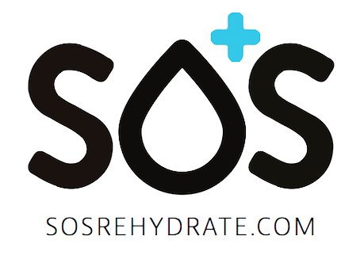
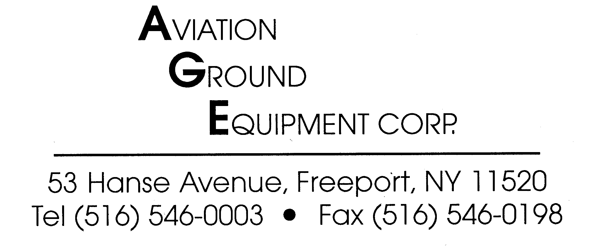

| ABOUT | MEMBERS | OFFICERS | RACES | COMMUNITY | SPONSORS |
...MRun is the running club at the University of Michigan. One of the founding clubs in the club running scene, MRun has since been a dominant force. Since its inception in 2004, the club has grown to a membership of over 200 dues-paying undergraduate and graduate students. This makes MRun not only the biggest, most popular, and fastest growing club on campus, but also the largest collegiate running club in the nation. Racing in varsity and club Cross Country and Track and Field meets across the Midwest, MRun is very competitive within collegiate running. The MRun men were national champions at the 2010 NIRCA Cross Country Championships meet, while the women completed the same feat in 2008. The MRun men and women have had top-five finishes within the NCTFA National Track and Field meet. Members of the club win races at the 5k, 10k, and marathon distances. MRun also caters to track and field athletes and has year-round training for sprinters and field competitors. Because MRun competes in indoor and outdoor track, distance, sprint, and field event track athletes are able to travel around the country and compete in a long winter and spring season against club and varsity athletes.
Although MRun is very competitive, it accomodates all types of runners, and thus all ability levels are welcome. There are no cuts, try-outs, or time trials to join the club. Whether you wish to compete against colleges nationwide, run in actual varsity races, or just show up a few times a week and run with friends, MRun is the right club for you. MRun provides more than just an outlet for running; it is also a large charitable organization, deeply involved within the community. This year alone the club as a whole raised over $11,000 for various local and national charities, including: Special Olympics, The American Cancer Society, and myTeam Triumph. MRun also provides a very social atmosphere which is inviting to newcomers.
MRun welcomes all runners, regardless of speed or ability level. If you're a runner or would like to start running, MRun is the perfect club for you. All members of MRun have one thing in common: they love to run!
MRun offers daily training runs of 3, 5, and 7 miles every weekday, as well as a long run of 8-12 miles on Sundays (more training information, including time and location, is available on the FAQ page). If you are interested in racing, MRun travels to cross country meets in the fall as well as track and field meets in the winter and spring. Nothing in MRun is required, so you are free to attend as many or as few practices and meets as you would like.
If you would like more information about MRun, just come to a weekday practice at 4:15 at the Central Campus Recreation Building. Also feel free to contact any officers from the contact page with any further questions.
All ability levels are welcome!
If you couldn't attend the most recent mass meeting, you can find our slideshow link below.
Also if you haven't already filled out your Maize Page waiver forms, then you cannot attend meets. So please do so at the link below.
All checks for MRun should be made out to "University of Michigan" with "Running club" in the memo line. Talk to your swag chair to order swag, and talk to anyone at office hours to sign up and pay for meets.
If you are already in MRun then you can join our Facebook group: MRun Fun! You should also check out our calendar of upcomming events, view race photos on NIRCA, and see potential routes on the MapMyRun app.
Hello! I'm a senior studying Movement Science and do a little physics on the side. I'm always looking to get a good run in and make some new friends. As President for the 2015-2016 school year, I'll be making sure that the club operates smoothly and making sure your MRun experience is as good as it possibly can be. While MRun is first and foremost a running club, we also take part in community service and hold social events. MRun has something to offer for everyone so if you've got any questions about the club or just wanna talk about running, let me know!
In the fall, MRun competes in National Intercollegiate Running Club Association (NIRCA) cross country races. There are no tryouts, cuts, or qualifying times for the team, so anyone who wants to race is welcome! Most races are 8k for men and 6k for women, with a few 5k races sprinkled in.
MRun travels to several local NIRCA meets in the fall, as well as a select few collegiate varsity races. See the schedules tab for more information on races.
MRun enjoys a reputation as one of the most competitive clubs in the nation. The men and women have finished very well in the National Championships every year since the inception of NIRCA. The women were National Champions in 2008, while the men's team brought home the gold in 2010.
MRun has several different training groups to prepare for the races, with the training plans being included in the weekly training e-mails sent out by the training chair. There are separate training plans for sprints (100-400, hurdles), mid-distance (800-Mile), and distance (3k steeplechase-10k, half marathon), as well as training opportunities for field events (shotput, discus, long jump, high jump, triple jump).
Sprint Training Plan: Sprint practices in the fall will consist of doing short runs with the distance team at 4:15 at the CCRB, and Tuesday/Thursday track workouts at 8:30pm at the Varsity Outdoor Track. More focused sprint training will begin when we return from winter break.
Distance/Mid-Distance Training Plan: Workouts will start in January on Tuesday and Thursday nights at 8:30 on the varsity indoor track.
Field Event Training Plan: Questions should be directed to the sprint training chair.
There are many opportunities to volunteer with MRun throughout the year. Listed here are some of the club's main community service endeavors. Any questions about how we get involved can be directed to the community service chair.
The Race Across Michigan (RAM) is an annual event held by the University of Michigan Running Club (MRun) to raise money for the Special Olympics. The runners start at 6:00 in the morning on the Detroit river, and they take turns running the 182 miles across the state of Michigan. The runners will run a total of nearly 24 hours to finish in South Haven, on the coast of Lake Michigan. Leading up to the event, the participants engage with Special Olympics athletes and raise donations for Special Olympics Michigan to support this incredible organization.
If you want to donate by cash or check, make checks payable to "Special Olympics"
Mail to: Club Sports
Attn: Club Running
606 East Hoover Ave.
Ann Arbor, MI 48109
If you want to donate online, you can visit our First Giving site! And if you have any questions, you can contact the RAM coordinators via email below.
If you are interesting in sponsoring MRun, please contact the club president at mrunpresident@umich.edu
|  |
SOS Hydration"SOS is used daily by Olympians, professional sports teams and athletes, weekend warriors, and literally anyone with an active lifestyle." |
|  |
Aviation Ground Equipment Corp."Serving the aviation industry from the ground up." |
Point 6 |
|
Red Ace |